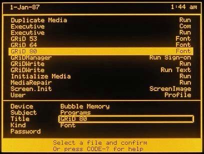
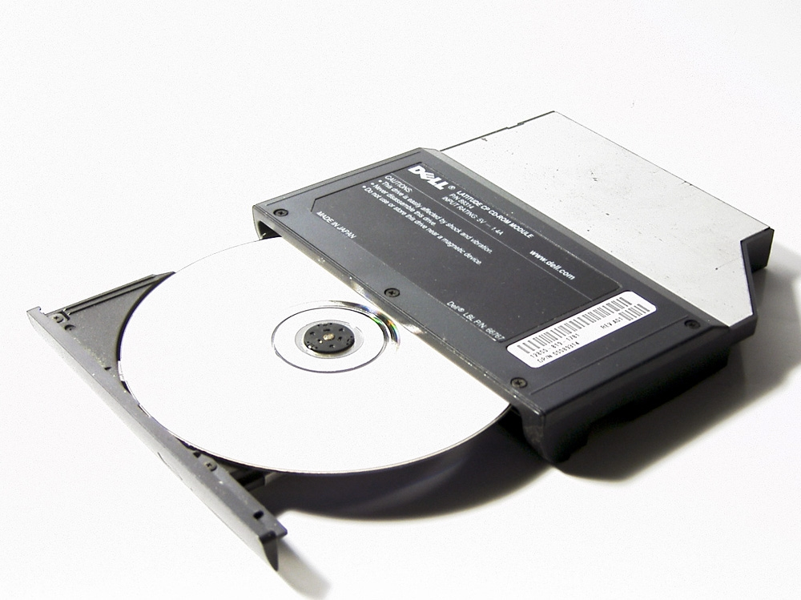
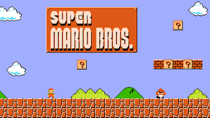
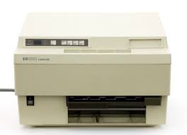

◆ The GUI Revolution ◆
Computers left the garage and entered the living room. The graphical user interface replaced cryptic commands with icons and windows. Software became an industry. Gaming sparked a cultural revolution.
The Desktop Era
The 1980s transformed computing from a hobbyist passion into an everyday household item. IBM's entry into personal computing in 1981 legitimized the market, while Apple's Macintosh in 1984 showed the world that computers could be intuitive and beautiful.
Microsoft's MS-DOS became the dominant operating system for IBM-compatible PCs, and by the end of the decade, Windows was establishing the graphical interface standard that would define computing for the next three decades.
IBM PC (1981) — IBM's open architecture allowed other manufacturers to build compatible machines, creating the PC industry as we know it.
Apple Macintosh (1984) — The first mass-market computer with a mouse-driven graphical user interface, introduced by the famous "1984" Super Bowl ad.
MS-DOS (1981) — Microsoft's disk operating system came bundled with IBM PCs, making Microsoft the dominant software company.
CD-ROM (1985) — Brought high-capacity read-only storage to personal computers, enabling multimedia software and encyclopedias.
Key Events
Technology of the 1980s



